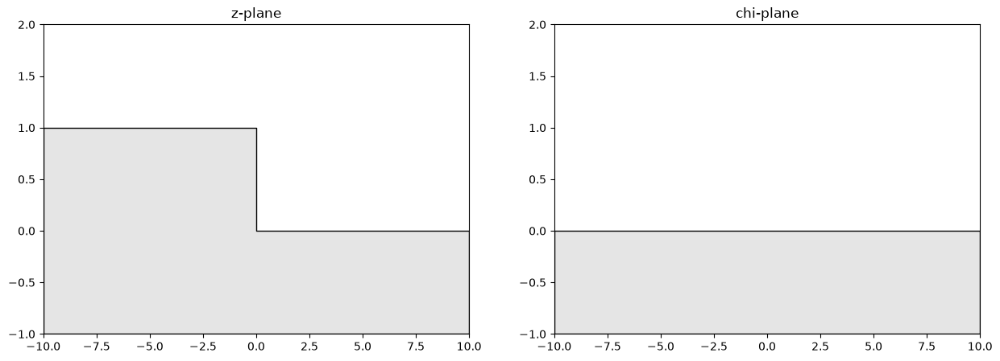

Horizontal ramp with a step¶
This notbook covers the conformal mapping of a horizontal ramp with a step. The step is centerd along th y-axis and of a defined hight h.
The mapping¶
The mapping is dervied using Schwartz-Christoffel and is of the from $$ z = \frac{h}{\pi}\left[ \sqrt{\chi - 1} \sqrt{\chi + 1} + \ln\left(\chi + \sqrt{\chi - 1} \sqrt{\chi + 1}\right)\right] $$
# Imports
import matplotlib.pyplot as plt
We define the ramp with the following variable
# Variables
h = 1
# Plot limits
xlim = (-10, 10)
ylim = (-1, h + 1)
The ramp is mapped on to the half-plane, or rather the half plane in the chi-plane is mapped onto the ramp in the z-plane.
Warning
Becuse the mapping is from chito zthe elements must be defined in the chiplane.
fig, ax = plt.subplots(1,2, figsize=(15, 5))
ax[0].fill_between([xlim[0], 0, 0, xlim[1]], [h, h, 0, 0], y2=-1, facecolor=(.8,.8,.8,.5), edgecolor="k")
ax[0].set_xlim(xlim)
ax[0].set_ylim(ylim)
ax[0].set_title("z-plane")
# Chi-plane plot
ax[1].fill_between([xlim[0],xlim[1]], [0, 0], y2=-1, facecolor=(.8,.8,.8,.5), edgecolor="k")
ax[1].set_xlim(xlim)
ax[1].set_ylim(ylim)
ax[1].set_title("chi-plane")
plt.show()

Horizonatal uniform flow¶
We model horizontal uniform flow by defining unfirom flow parallel to the x-axis in the chi-plane.
# Varialbes
w = 1 + 0j
# Omega function
omega_func = lambda z: omega_uni_flow(z, w, map_chi_to_z(lambda chi: xi_to_ramp(chi, h)))
We can now plot the solution